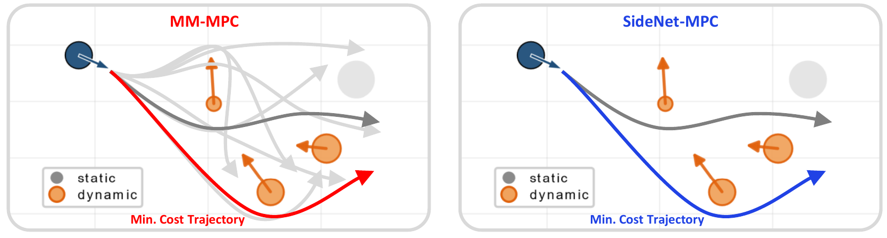
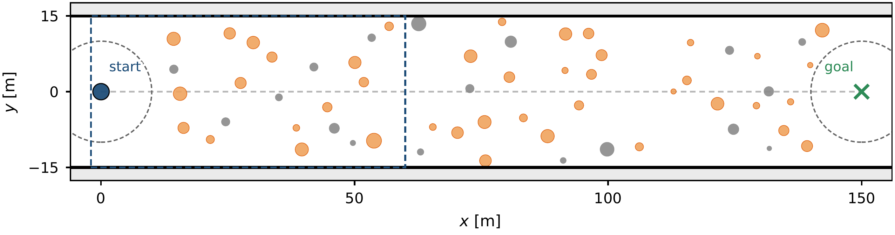
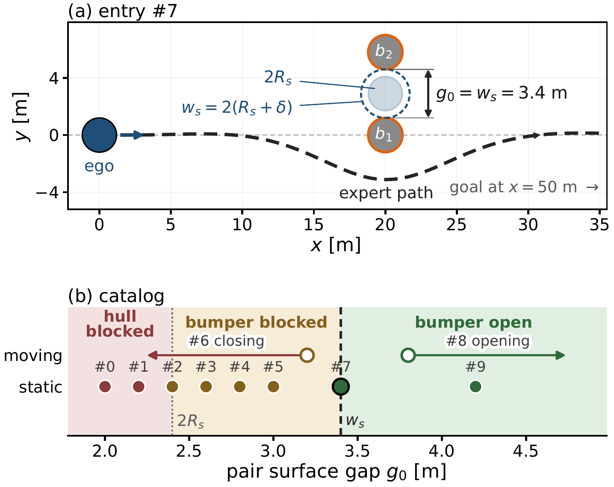

Manuscript under reviewImitation learningModel predictive controlGraph neural networks
Imitation Learning of Avoidance Modesfor Computationally Efficient Multimodal MPC
A graph network learns the avoidance side of each obstacle from a multimodal MPC expert, cutting sixteen OCPs per control period to at most two while the safety constraints stay in the optimization.
Changyu Lee1,†, Byung-Kwan Lee2, Kanghoon Yoon3
1Kongju National University · 2NVIDIA Research · 3KAIST
Faster on one core than the expert on sixteen, at 93% of its success
20.9ms
per control period on one core
−43%
computation vs. the expert's 36.9 ms on 16 threads
93%
of the expert's successes, 90 vs. 97 (p = 0.065)
3.2–3.5m
side-reversal gap, the expert's own interval
100 seed-matched runs of mixed traffic per controller.
Why multimodal MPC is expensive
Every combination of avoidance sides is its own OCP
With TC-CBF constraints, each obstacle is passed on a fixed side, so the expert solves one OCP per side combination: K = 2Nb per control period.
Two branch obstacles, K = 4. Four local optima, one per homotopy class.
Four branch obstacles, K = 16. The budget the learned proposal replaces.
SideNet-MPC
Propose one mode, keep the last one, solve at most two
1
Select
4 branch and 8 guard obstacles, by the expert's rule.
›
2
Propose
SideNet predicts one side per branch obstacle.
›
3
Remember
The previous mode is the second candidate.
›
4
Solve
At most two TC-CBF constrained OCPs.
›
5
Arbitrate
The lower cost is executed.
Block structure. Expert: all sixteen modes. SideNet-MPC: proposal and previous mode.
One solve when the proposal matches the previous mode.
The network never outputs a control input.
At most two OCPs, however many branch obstacles.

One planning step. The expert (red) and SideNet-MPC (blue) execute the same maneuver; candidates in grey.
Graph neural network
Edges carry the gap the vehicle will actually meet
A neighbor can close the gap an isolated side choice would use, so SideNet links the branch obstacles in a complete graph with pair-gap edges.
SideNet. Shared embedding, two edge-conditioned message-passing layers, one side logit per branch obstacle.
NODES
One slot per obstacle
Relative position, velocity and radius, plus the ego state. Permutation-equivariant.
EDGES
Gap at the encounter
Current gap, gap at the encounter time, and closing rate.
SIZE
Small and fast
94,851 parameters, under 0.1 ms per forward pass on one core.
Training data
Supervision from the expert's own cost records
77,925 steps from 210 expert rollouts, labelled by the arg-min of the sixteen recorded costs.
Left–right reflection doubles the training split to 126,066 steps.
1,888 pair-band steps (1.5%) target the side threshold; only SideNet uses them.

Collection corridor. 18 static and 42 dynamic obstacles.

Pair-band augmentation. Ten short episodes with pair gaps around the hull width 2Rs and the bumper-inclusive width ws.
Closed-loop evaluation
Three deterministic scenes
Baselines change only the proposer: Slot-MLP and Slot-MLP-wide see one obstacle at a time, Deep-set pools them without pair edges.
Closing gate
Narrows from 8 to 2 m
✓Expert21.4 s · 0.54 m
✓SideNet-MPC19.8 s · 0.57 m
✓Slot-MLP, early pass16.6 s · 0.14 m
Staggered gates
Three 2.6 m gates
✓Expert52.0 s
✓SideNet-MPC52.2 s
✕Slot-MLP, deadlock at gate 2timeout
Obstacle and gate
Hull-wide gate
✓Expert29.4 s
✓SideNet-MPC29.4 s
✓Slot-MLP29.4 s
Arrival time · minimum clearance. Identical traffic, 4.8× real time, click to replay. Slot-MLP-wide and Deep-set also time out at the staggered gates.
Mixed traffic · 100 seeds
The expert's success within noise, on one core
Ten head-on, crossing, overtaken and static obstacles per seed. SideNet-MPC is seven runs behind the expert, not significant (p = 0.065), and ahead of every proposer without pair edges.
Successful runs
out of 100 seed-matched runs
Computation time per control period
mean, milliseconds
Closed-loop Monte Carlo results on mixed traffic, 100 seeds
Controller
Parameters
Success
Collision
Timeout
Arrival [s]
Time [ms]
Expert (16 OCPs)
—
97
3
0
37.3 ± 9.1
36.9
SideNet-MPC
94,851
90
10
0
35.5 ± 7.4
20.9
Slot-MLP
9,217
82
16
2
34.3 ± 7.0
19.7
Slot-MLP-wide
95,017
81
18
1
34.8 ± 6.6
21.0
Deep-set
17,473
77
23
0
34.5 ± 6.0
21.3
Arrival averages successful runs. Expert: 16 OCPs on 16 threads; learned rows: at most two on one core (Intel Core Ultra 7 270K). McNemar p vs. SideNet-MPC: expert 0.065, Slot-MLP 0.039, Slot-MLP-wide 0.064, Deep-set 0.011.
Two seeds, 2–3 s before Slot-MLP collides. The expert and SideNet-MPC take the same side; Slot-MLP plans into a closing gap.
Three of the 100 runs, replayed
Each seed gives the three controllers identical traffic. Trails run from red at the start to violet at the end; rings mark the obstacles whose sides are being decided.
Same side, same path. SideNet-MPC reproduces the expert’s pass below the crossing group at a third of its computation time. Slot-MLP keeps straight and is hit at 12.2 s.
✓Expert34.0 s · 39.1 ms
✓SideNet-MPC34.0 s · 13.0 ms
✕Slot-MLPcollision at 12.2 s
A closing gap. The expert and SideNet-MPC pass above the obstacles crossing the corridor. Slot-MLP turns below, into the gap they are closing, and collides at 12.0 s.
✓Expert29.8 s · 35.0 ms
✓SideNet-MPC29.6 s · 18.4 ms
✕Slot-MLPcollision at 12.0 s
A dense cluster. All three slow to a crawl in front of a cluster near x = 75 m. SideNet-MPC clears it over the top at 28 s, the expert at 48 s, and Slot-MLP only at 71 s, too late to arrive.
✓Expert62.4 s · 38.9 ms
✓SideNet-MPC43.0 s · 21.3 ms
✕Slot-MLPtimeout at 80 s
Arrival time · mean computation time per control period. Seeds chosen for illustration among runs that the expert and SideNet-MPC complete and Slot-MLP does not; the table counts all 100. 3× real time, click to replay.
Why pairwise edges
Only the graph proposer reverses the side, and where the expert does
The partner obstacle slides away, widening the pair gap from 0.3 to 7.4 m. The expert switches sides between 3.22 and 3.54 m.
Side logit against the pair gap. Shading: the expert's side; dashed: ws = 3.4 m. Right: modes proposed by SideNet (solid) and Slot-MLP (dash-dotted) at four gaps.
Slot-MLPConstant +1.367: the partner is not an input.
Deep-set+2.744 to +2.996: never changes side.
SideNet−1.322 to +1.862, crossing zero at 3.22–3.54 m.
Conclusion
A learned mode decision without a learned control input
What the study shows
Two OCPs instead of sixteen, at 93% of the expert's success.
Every executed input comes from a TC-CBF constrained OCP.
Pair-gap edges, not extra capacity, carry the side decision.
Limits and next steps
Slack-relaxed constraints on selected obstacles: no safety guarantee.
Single training seed; only SideNet saw the pair-band data.
Next: a graph over all selected obstacles, and embedded hardware.